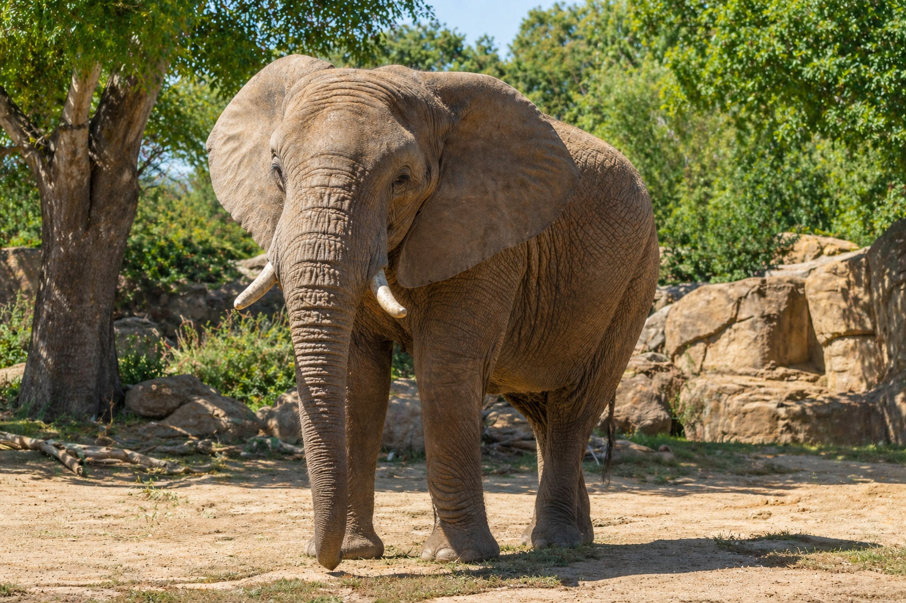
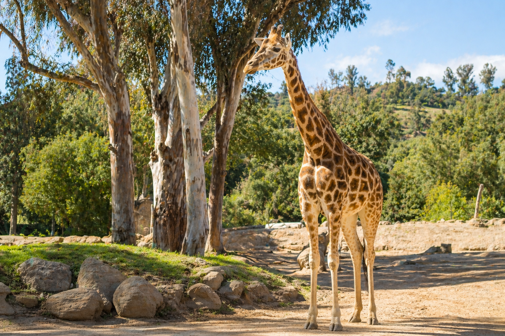
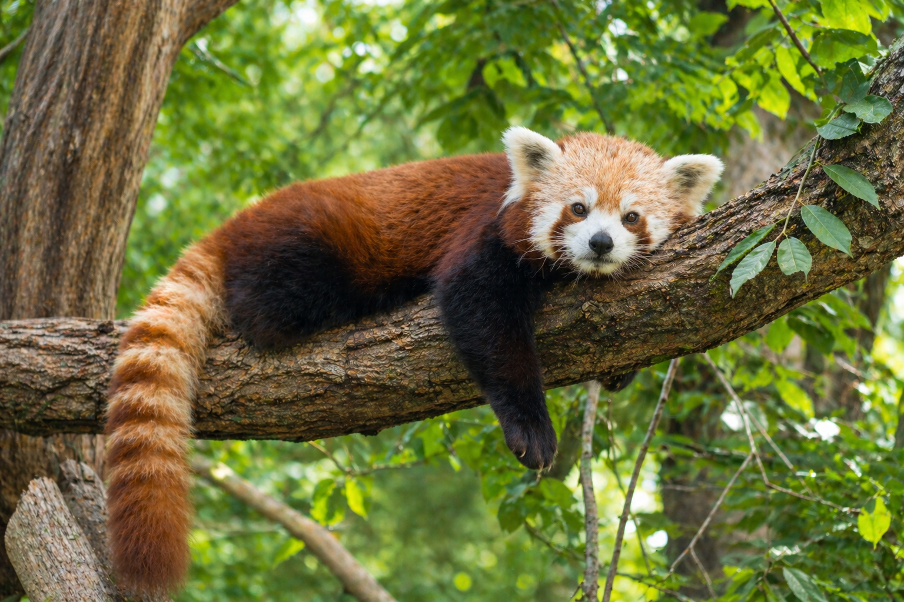
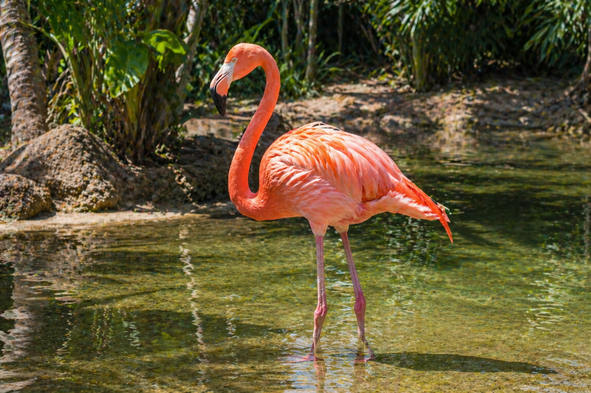
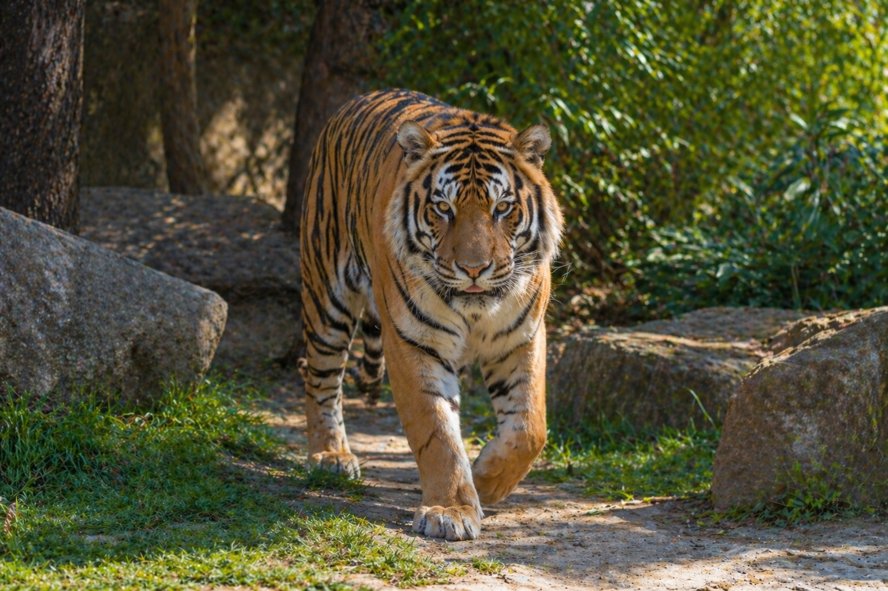

Meet the Animals
Discover a few of the amazing animals that guests can learn about while visiting the zoo. Each animal plays an important role in helping visitors understand wildlife, habitats, and conservation.

Elephant
Elephants are known for their intelligence, strong memory, and close family groups. They use their trunks to smell, drink, communicate, and pick up food. At the zoo, elephants help visitors learn about the importance of protecting large mammals and their natural habitats.

Giraffe
Giraffes are the tallest land animals in the world. Their long necks help them reach leaves high in trees, and their unique spotted patterns make each giraffe easy to identify. They are a favorite for many zoo visitors because of their gentle appearance and impressive height.

Red Panda
Red pandas are small, tree-dwelling mammals with reddish fur and bushy tails. They spend much of their time climbing and resting in trees. Their playful behavior and unique appearance make them one of the most memorable animals to see.

Flamingo
Flamingos are social birds often seen standing together in large groups. Their pink color comes from the food they eat, and their long legs help them move through shallow water. They add bright color and energy to the zoo environment.

Tiger
Tigers are powerful big cats recognized by their orange coats and dark stripes. Each tiger has a unique stripe pattern. Learning about tigers helps visitors understand why habitat protection and conservation are important for endangered species.